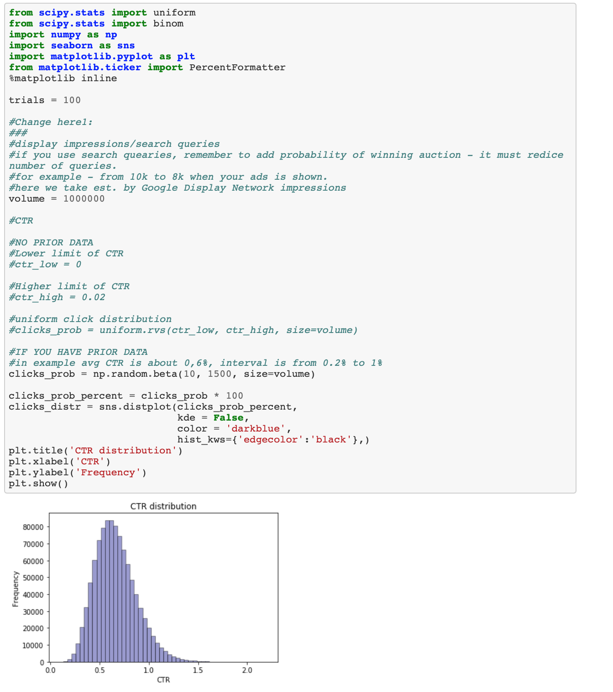
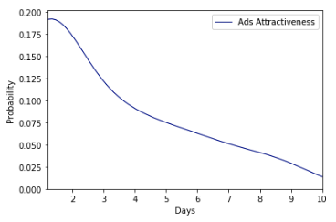
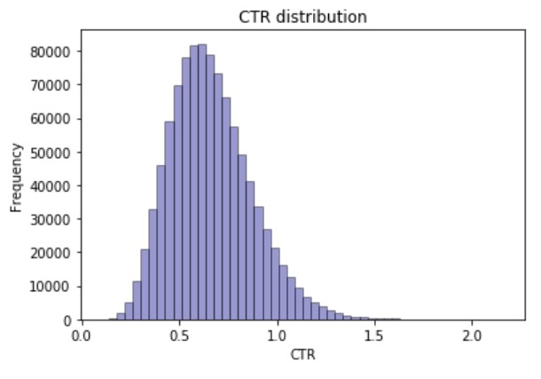
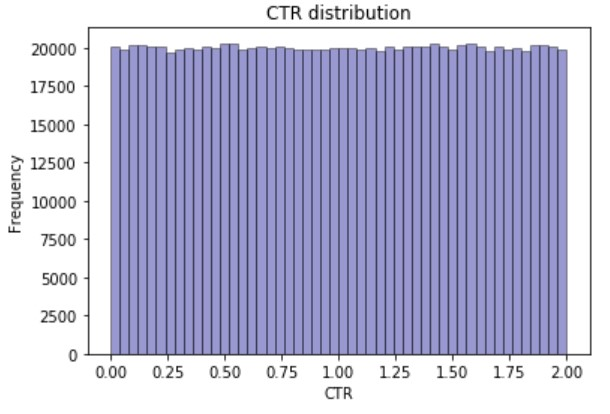
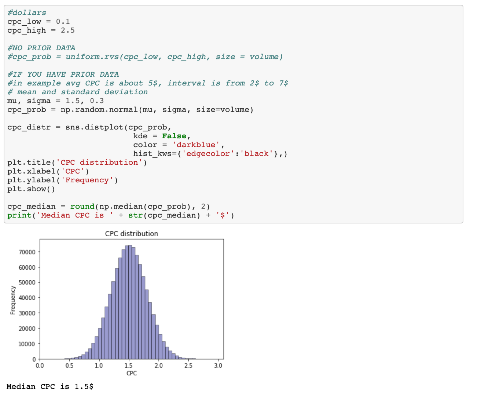
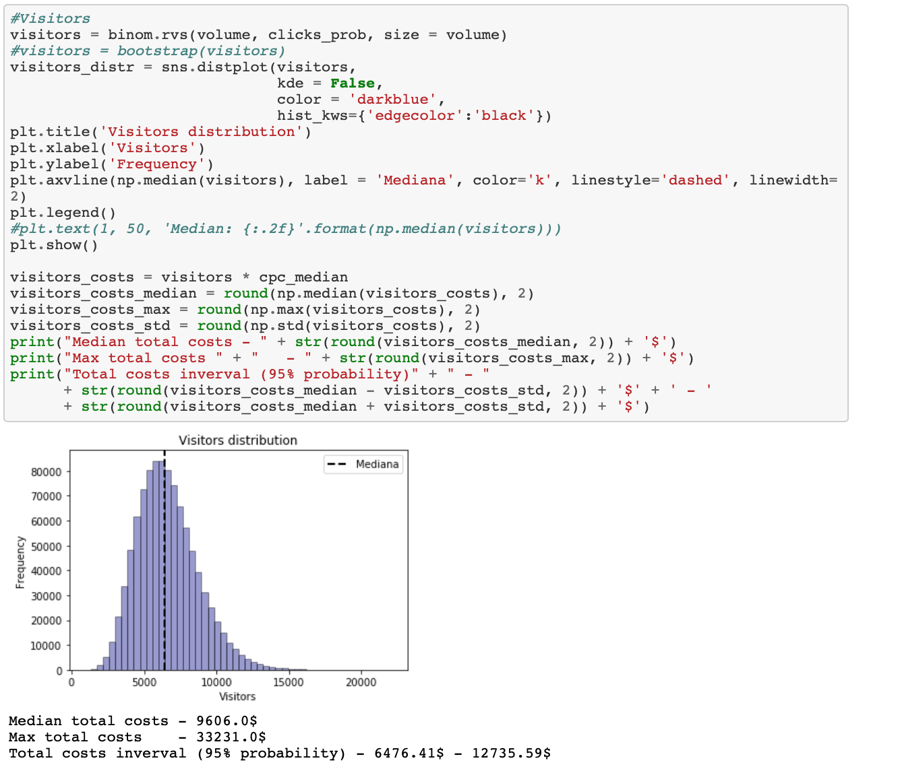
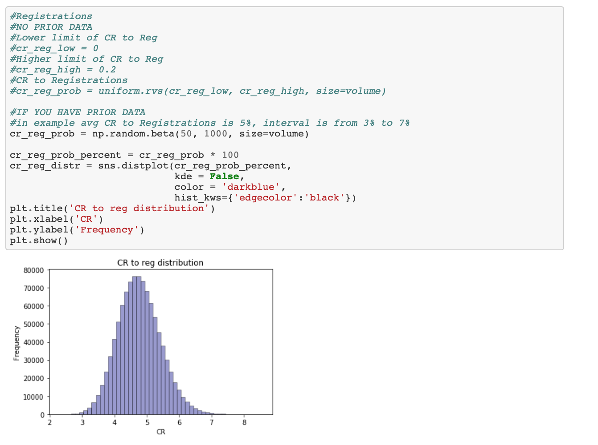
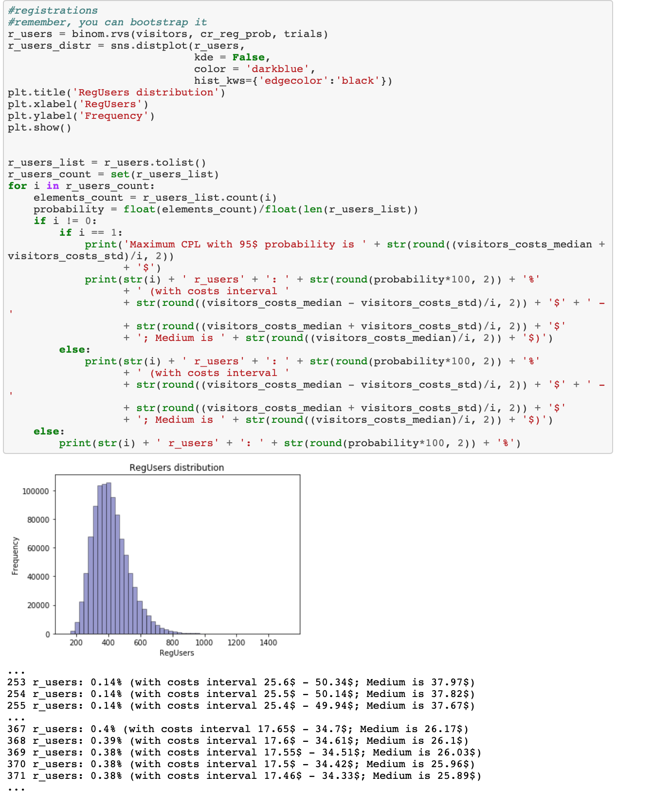
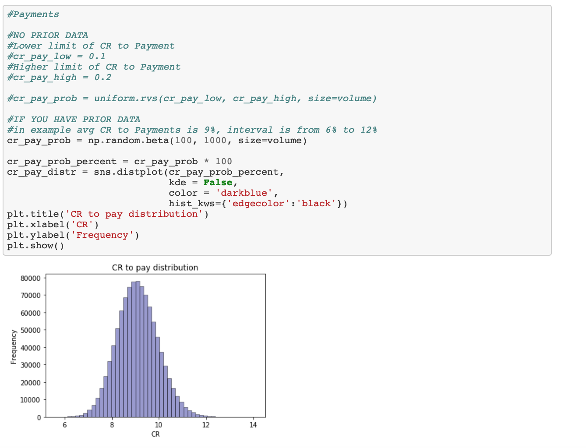
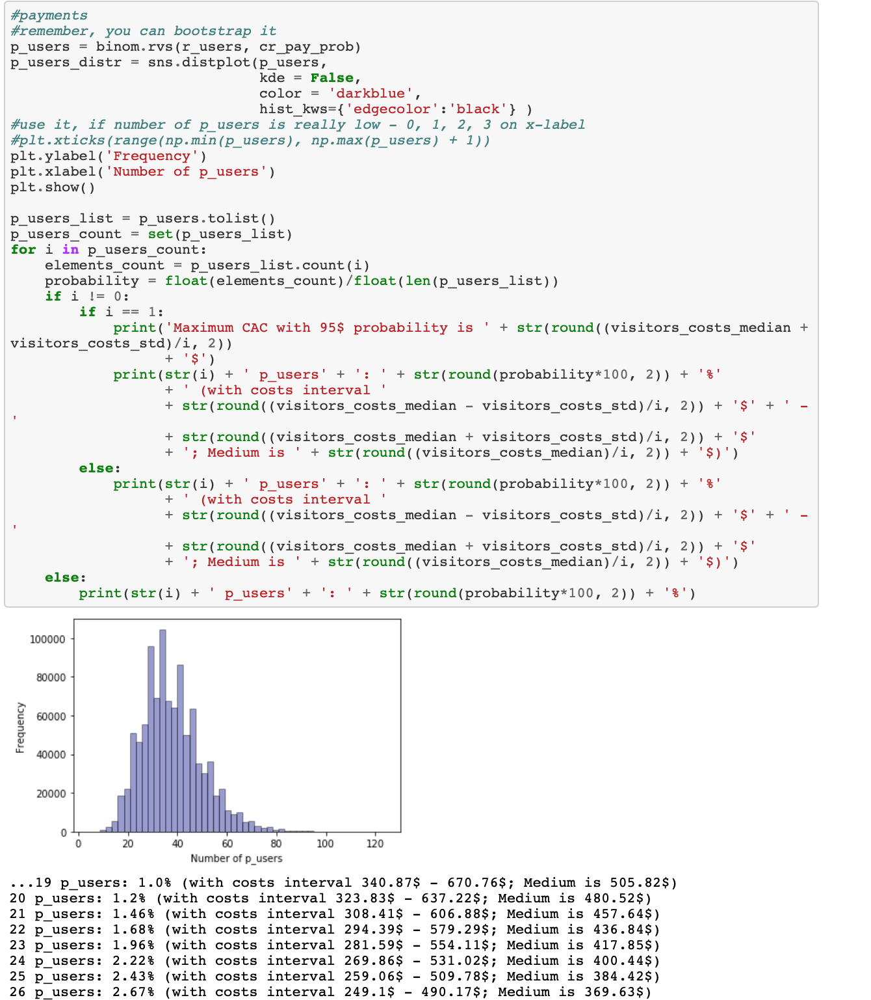

LINKS
June 14, 2020
An article by Sergey Matrosov
Among the challenges faced by online marketers, are the expected results from paid campaigns. An answer to these challenges is often a media plan that is based on experience, expertise and a quick superficial analysis of the business area. That’s good, but it is not sufficient, as it doesn’t provide the range of expectations in a specific sense.
The truth is that media plans usually give you just one option with regard to future results, based on average CTR and CR. The more advanced plans try to evaluate the worst and the best options, but this is still not enough. It’s more crucial to have results based on each value of the ranges of these metrics, namely the interval. Another consideration is that digital marketing, with particular emphasis on the word ‘digital’, relates primarily to data-driven activity. In addition, we have to represent our experience and knowledge in exact digits, which is why online marketers need to use more complicated Math and Python today. In this article, I will focus on aspects of Math, as the python code itself is very simple, but the calculations under the hood are not.
Imagine that you have a simple customer journey on your website: visit -> registration -> payment/order. You know (from your data or from the benchmark data from Google representative) the GDN campaign type for this product, for example, CPC is nearly $1.5 +- $1, but CTR is between 0.3% and 1.5%, therefore the average is 0.6%. We also know the range of CR to Registration and CR to Payment/Order from registered. Yes, we simplify this on purpose to help you focus on the key elements, giving you even more assistance.
So, we need to start with the answer to the question that defines our strategy and consider how much budget we have. Based on this, we could estimate the search volume (or impressions if we are talking about display) that we could potentially achieve.
For example, we have a budget for display campaigns. We established from our targeting settings that we could expect a volume of 1,000,000 impressions. Here I should mention that the more volume we have, the more accurate our predictions will be - it's an old story about data size. 1,000,000 is not a bad start.
Let’s summarize prior data to stay on the same page:
So, let's get into code (here is full version):

Let’s take a closer look at what we coded. First of all, we used pretty well-known libraries like SciPy and Numpy to make distributions of metrics such as CTR, CPC, CR to Reg, CR to Payment. What is the distribution? This is a listing showing all the possible values of the data and how often they occur. They may be in different forms; in our case we use uniform, beta and normal distributions. Distributions are extremely helpful in the way in which they describe the given data. For example, exponential (continuous analog of the geometric) distribution can show how the (probability of) attractiveness of an ad decreases day by day following the launch of your new creative:

In our code, beta distribution helps us acquire an array of data relating to CTR, where most of it is close to 5%, with low limits of around 3% and higher limits of around 7%. This is based on prior data.

In cases, where no such data exist, we could say that our CTR is likely to be within a range of 0 to 0.20% and uniform distribution assists us:

In other words, distributions are models that have been developed by Math and statistics to describe real-world processes/situations. There is a strong possibility that the set of processes related to your work could be described by these. If you are aware of distributions, you are already able to simulate concepts such as ongoing campaigns and results. Simulation itself is based on a set of trials, which provide us with the distribution of visitors/registered/paid users.
The images below show that the calculation of each metric is almost the same with the exception of two elements:


With such CTR and based on 100 trials, we usually get around ~7000 visitors monthly, with an average total cost of ~ $9610. You could change the variable ‘trials’ at the start of the book to 1000, to get more accurate data, but remember, it’ll take more time to evaluate the new trial.
Following visitors’ calculation, nothing different is required to calculate registrations and purchases: it really is the same process.




And here are our results. It is important to note that this pseudo prediction is based only on one small marketing activity that targets our users - it doesn’t take account of any other additional efforts: such as display ads, remarketing, etc. or specific of the source itself. Here the real journey to predictions starts with calculating the influence of other channels, internal and external factors, etc. on this marketing activity and custom attribution model to understand the various areas of growth, etc. Good luck!
LINKS